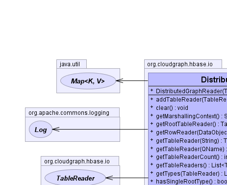
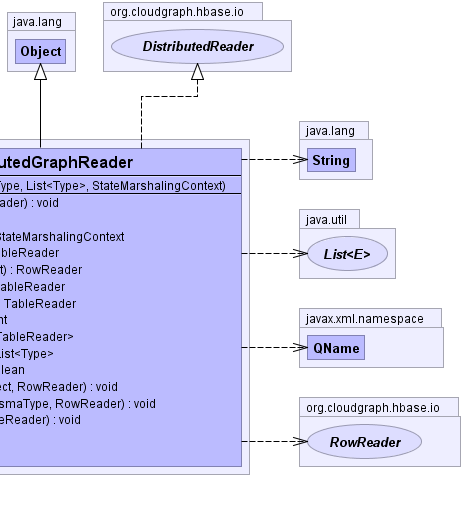

public class DistributedGraphReader extends java.lang.Object implements DistributedReader
Acts as a container for one or more TableReader elements
encapsulating a set of component table read operations
for distributed assembly across multiple tables, or a single table
in the most simple (degenerate) case.
GraphTableReader,
GraphTable|  |  |
| Constructor and Description |
|---|
DistributedGraphReader(Type rootType,
java.util.List<Type> types,
StateMarshalingContext marshallingContext) |
| Modifier and Type | Method and Description |
|---|---|
void |
addTableReader(TableReader reader)
Adds the given table reader to the container
|
void |
clear()
Frees resources associated with this reader and any
component readers.
|
StateMarshalingContext |
getMarshallingContext()
Returns the marshalling context for this operation.
|
TableReader |
getRootTableReader()
Returns the table reader associated with the
data graph root.
|
RowReader |
getRowReader(DataObject dataObject)
Returns the row reader associated with the given data object
|
TableReader |
getTableReader(javax.xml.namespace.QName qualifiedTypeName)
Returns the table reader for the given
qualified type name, or null if not exists.
|
TableReader |
getTableReader(java.lang.String tableName)
Returns the table reader for the given
configured table name, or null of not exists.
|
int |
getTableReaderCount()
Returns the count of table readers for this
container.
|
java.util.List<TableReader> |
getTableReaders()
Returns all table readers for the this container
|
java.util.List<Type> |
getTypes(TableReader operation)
Returns a list of types associated
with the given table reader.
|
boolean |
hasSingleRootType()
Returns true if only one table operation exists
with only one associated (root) type for this
operation.
|
void |
mapRowReader(DataObject dataObject,
RowReader rowReader) |
void |
setRootTableReader(TableReader reader)
Sets the table reader associated with the
data graph root.
|
public DistributedGraphReader(Type rootType,
java.util.List<Type> types,
StateMarshalingContext marshallingContext)
public TableReader getTableReader(java.lang.String tableName)
getTableReader in interface DistributedReadertableName - the name of the configured table.public TableReader getTableReader(javax.xml.namespace.QName qualifiedTypeName)
getTableReader in interface DistributedReaderqualifiedTypeName - the qualified type name.public void addTableReader(TableReader reader)
addTableReader in interface DistributedReaderreader - the table reader.public int getTableReaderCount()
getTableReaderCount in interface DistributedReaderpublic java.util.List<TableReader> getTableReaders()
getTableReaders in interface DistributedReaderpublic TableReader getRootTableReader()
getRootTableReader in interface DistributedReaderpublic void setRootTableReader(TableReader reader)
setRootTableReader in interface DistributedReaderreader - the table readerpublic RowReader getRowReader(DataObject dataObject)
getRowReader in interface DistributedReaderjava.lang.IllegalArgumentException - if the given data object
is not associated with any row reader.dataObject - the data objectpublic void mapRowReader(DataObject dataObject,
RowReader rowReader)
mapRowReader in interface DistributedReaderpublic java.util.List<Type> getTypes(TableReader operation)
getTypes in interface DistributedReaderreader - the table readerpublic boolean hasSingleRootType()
hasSingleRootType in interface DistributedOperationpublic void clear()
clear in interface DistributedReaderpublic StateMarshalingContext getMarshallingContext()
DistributedOperationgetMarshallingContext in interface DistributedOperationCloudGraph® is a registered trademark of TerraMeta Software, Inc. Copyright © 2014 - All Rights Reserved.